Brand

This is the page for the brand of White Parrot! White Parrot is a company that collects parrots, expands parrot vocabulary, and sells them on the market! The company was founded in 1992 and has taught parrots different words and phrases over a variety of years! This includes:
- Slang terms, old and new
- Poems
- Celebrity Names
- Song Lyrics and Melodies
- Curse Words and more!
- Email: whiteparrot@gmail.com
- Phone: 333-444-5555
- 1302 Birdbrain Ln